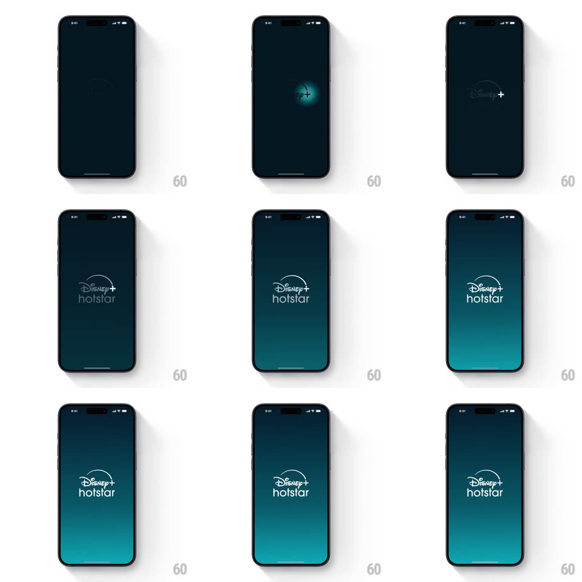

Media
Frame-by-frame

Rebuild this animation 1:1: Disney+ Hotstar's launch - a glowing light sweep crosses the dark gradient splash to reveal the logo, then the home screen materializes with its hero carousel and poster rails.

Rebuild this animation 1:1: Disney+ Hotstar's launch - a glowing light sweep crosses the dark gradient splash to reveal the logo, then the home screen materializes with its hero carousel and poster rails.
## Integration
Integration: stack-agnostic spec - springs given as stiffness/damping, timed motions as duration + curve; map every value to your framework and animation library of choice.
## Scene
A near-black splash with a deep blue-purple gradient; a teal-white glowing line sweeps across, revealing the Disney+ Hotstar logo, then the app home fades in: a large hero poster carousel (Sonic, Elio, ViR), poster rails ("Popular in Kids", "Indian Legends", "Desi Heroes"), and the bottom nav with the glowing Home indicator.
## Motion spec
Pattern: light-sweep reveal + content materialize.
- Sweep (0-700ms): a thin glowing line (teal core, white-hot center, 40px soft bloom) travels left to right across the screen's vertical center (700ms, ease-in-out); the logo fades in behind the sweep's leading edge, so the mark appears to be written by the light.
- Settle (700-1000ms): the sweep's glow collapses into a soft ambient gradient behind the logo (bloom radius grows, opacity fades to 20%); a subtle star-field sparkle twinkles out.
- Home reveal (1000-1500ms): the splash crossfades to the home screen; the bottom nav's active-tab glow line (the same teal light) sweeps into place under Home (300ms), rails stagger up (translateY 24px, 300ms, 100ms apart), and the hero poster scales from 1.06 to 1 as it fades in (500ms).
- Hero carousel then auto-advances: posters crossfade with a slight Ken Burns drift (scale 1 to 1.05 over 6s per slide); title logos swap with the crossfade.
## Calibration
- The sweep is the brand moment: one clean pass, no repeats, no flicker.
- Home content must be fully interactive by 1.5s - the reveal never blocks.
## Reduced motion
Logo fades in; home fades in; no sweep.
## Don't miss
- The teal glow line is the through-line: it starts as the logo reveal and ends as the nav indicator.
- Poster rails are backplated in near-black; only posters and the glow carry color.